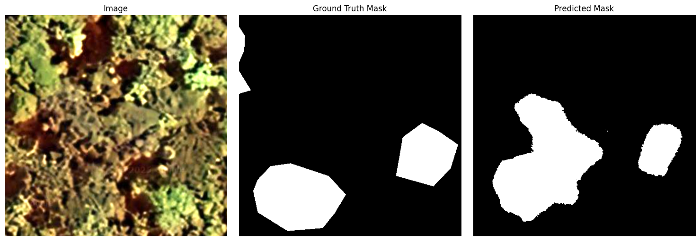
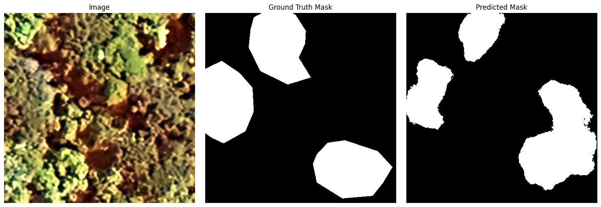
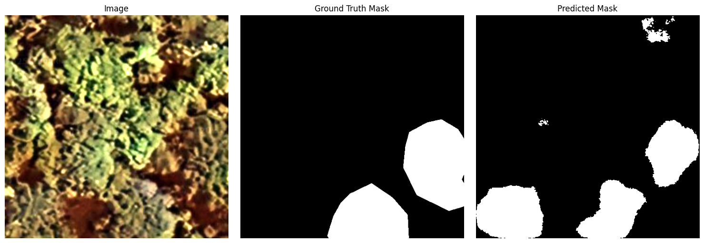
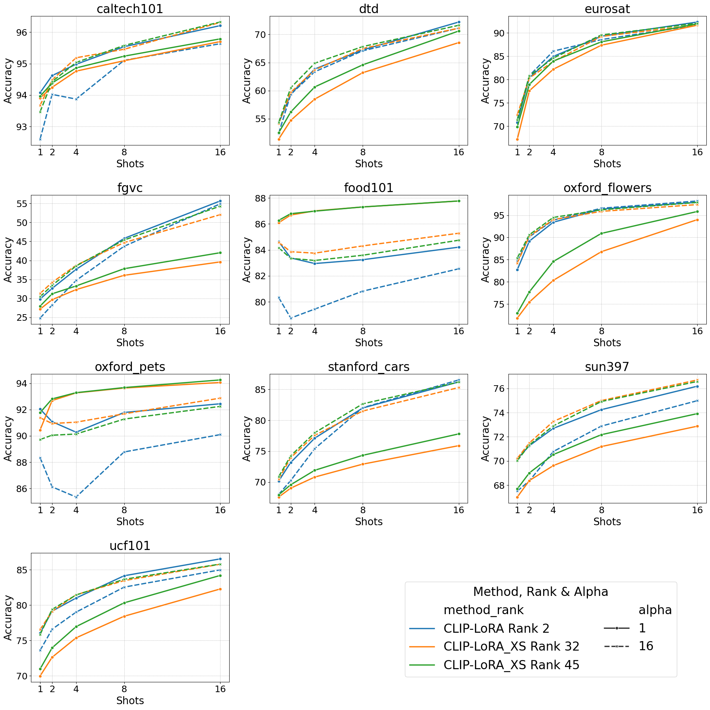
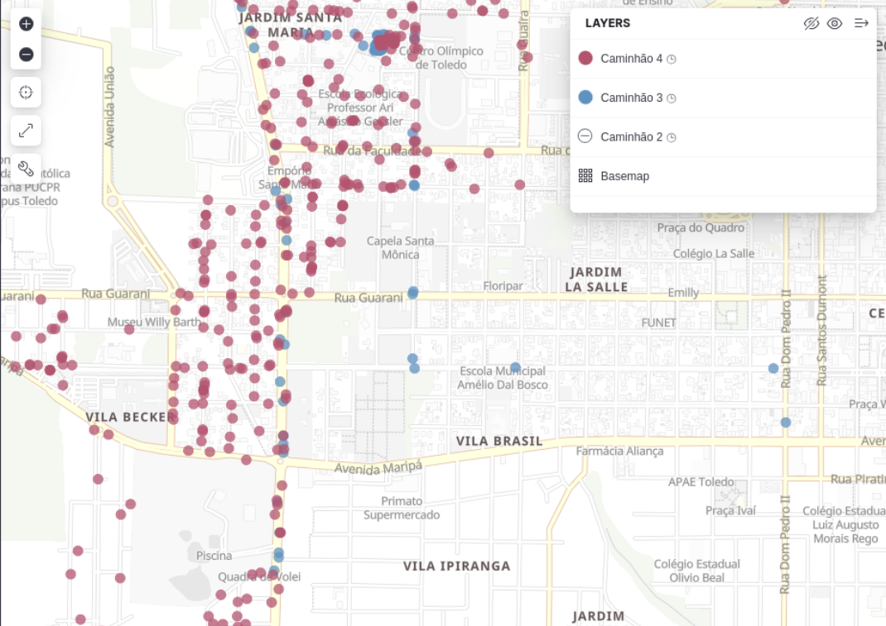
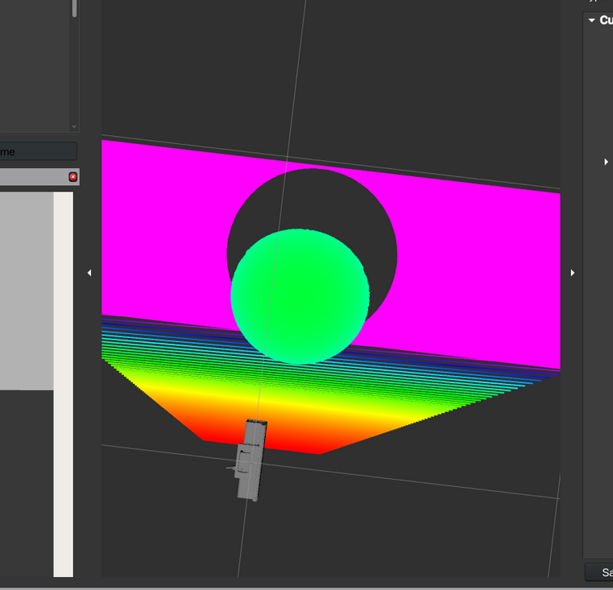

Hello! I am a recent Computer Engineering graduate from Federal Technological University of Paraná (UTFPR) looking for a Master's opportunity (or Ph.D) with focus on my previous research and current interests.
During university, besides joining the Competitive Programming (PPCI) study group, I participated in three main research projects: IoT Platform Management (paper contribution), CLIP-LoRA Optmization (international internship in Montréal) and Detecting endangered species with a Geospatial Foundation Model.
Embedded systems is also part of my overall interest, which is bridging the gap between devices with limited resources and AI (edge AI).
I'm currently working as a Machine Learning Engineer, building a Knowledge Tracing using Transductive Graph Learning.
Contact: eduardoprasniewski@gmail.com
Projects



Remote sensing with Geospatial Foundation Model (GFM)
2025
This project uses Prithvi-EO-2.0 — a GFM created by NASA and IBM — to segment araucaria angustifolia (known as Araucaria) canopy. The dataset was obtained from Google Earth satellite imagery and annotated by a specialist in the field of botany. Even with only 30 ground truth images and 10 epochs of training, the model was able to identify not only the target canopies, but even the ones that went unnoticed.

CLIP-LoRA-XS
2024 — 2025
During my research internship at Institut National de la Recherche Scientifique (INRS) in Montréal, I proposed an optimized fine-tuning solution for CLIP-LoRA, using the formula presented on LoRA-XS paper, creating CLIP-LoRA-XS. The results show that even using half of the trinable parameters used by the original CLIP-LoRA, the model achieved similar results.

Sentilo IoT Platform
2022 — 2023
As a Research Assistant, I created a containerized solution for Sentilo. The focus of the research was to create an alternative and cheap solution to monitor the air quality, using low cost sensors. Besides that the original organization provides a simple configuration, I added layers to communicate with ElasticSearch, using Logstash to capture the data arriving on Redis. Later, this project was used to test the scalability.

Stable diffusion from scratch
2023
Eager to know how the math works under the hood for image generation, I decided to study and implement a simple rice grain generator with Stable Diffusion. Dataset used (only 5k per rice type): Rice Image Dataset.

KinectV2 ROS2
2024
During one of my research projects, we needed to simulate a world using ROS2 and Gazebo with KinectV2. As the only model available at the time was KinectV1, I implemented the URDF model to use it on the simulations.
Papers & Publications
Awards
- MITACS GRA, INRS (2024-2025)
- Araucaria Research Grant, UTFPR (2022-2024)
- Brazilian Mathematics Olympiad (OBMEP) - Bronze medal, IFPR (2017)